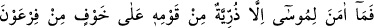
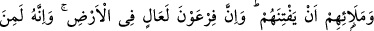
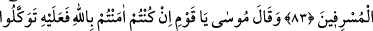
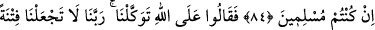
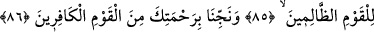
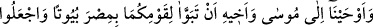
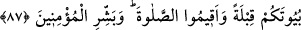

MUSA (A.S.) VE KAVMİ
83. Fir’avn’un ve kendi ileri gelenlerinin kötülük yapmasından korktukları için
kavminin içinde Musa’ya yalnız genç bir gruptan başkası inanmadı. Çünkü Fir’avn
yeryüzünde çok ululanan ve çok aşırı gidenlerdendi.
84. Musa dedi ki: “Ey kavmim, eğer Allah’a inandıysanız ve O’na teslim
olduysanız sâdece O’na tevekkül edin.”
85. Onlar da dediler ki: “Sadece Allah’a tevekkül ettik. Ey Rabbimiz, bizi o
zulmeden kavim için imtihan vesilesi yapma.”
86. “Rahmetinle bizi o inkarcı toplumdan kurtar.”
87. Musa’ya ve kardeşine: “İkiniz kavminiz için Mısır’da evler hazırlayın. (Ey
İsrailoğulları) Evlerinizi mescidler yapın, namaz kılın ve (Ey Musa) mü’minleri
müjdele.” diye vahyettik.
“Firavn’un ve kendi” kendilerinden genç kuşağın “ileri gelenlerinin kötülük
yapmasından” Fir’avn’un kendilerine işkence etmesinden ya da ileri gelen yahudilerin
Firavn’a gidip onları küfre döndürmesini istemelerinden “korktukları için”
Fir’avn’dan, yani işkencesinden korktukları için “kavminin içinde Musa’ya yalnız
genç bir gruptan” yani kavmi İsrailoğulları’nın çocuklarından “başkası inanmadı.”
Musa bu gençlerin babalarını davet ettiğinde Fir’avn’dan korktukları için davete icabet
etmediler, ama onlardan bir grup genç davete icabet etti.
İşkence fiili özel olarak Fir’avn’a isnad edilmiştir. Çünkü işkenceyi emreden O’dur.
Burada “zürriyet” kelimesine ‘genç’ mânâsı verilmiştir. Çünkü kavme ‘zürriyet’
denmesi ya onu tahkir etmek ya da küçüklüğünü göstermek içindir. Burada tahkir ve
alçaklık mânâsının yüklenmesine imkan yoktur. O halde kelimeyi yaş küçüklüğü veya
sayı azlığı mânâsında olmak üzere küçüklüğe hamletmek gerekir.
Âyet özet olarak şunu söylüyor: İsrailoğulları’nın genç bir grubu, hem Fir’avn’dan
hem de İsrailoğulları’nın ileri gelenlerinden korktukları halde Musa’ya inandılar. Kendi